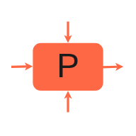
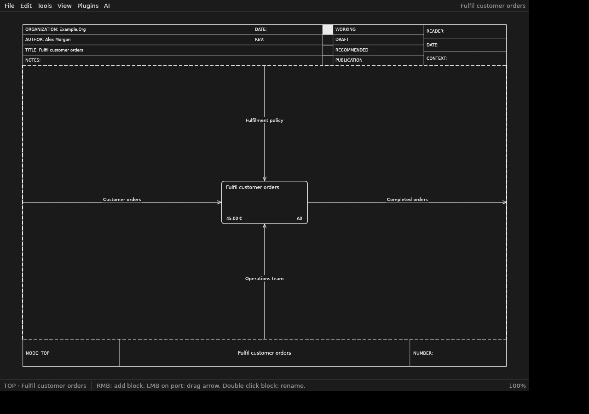

Build connected diagrams
Function blocks, orthogonal arrows, branches, and decomposition with inherited interfaces keep the big picture connected to the details.

erlu.From the big picture to every function. Build IDEF0 models, connect inputs and outputs, and explore how your system works.
Start without an account or installation. Your documents stay in your browser.
Describe what a system does, what it needs, and what it delivers. Then break each function into smaller parts.
Function blocks, orthogonal arrows, branches, and decomposition with inherited interfaces keep the big picture connected to the details.
Find issues in structure, connections, numbering, and IDEF0 semantics. Document-wide undo and redo let you explore changes.
Save editable .idef0 files and export PDF, SVG, or Markdown. Work locally, with offline browser access after the application is cached.

Bundled WASM plugins run on desktop and in the browser. Their edits share the editor’s undo and redo history.
Give blocks and arrows color to make your model easier to read.
Assign roles and responsibilities, check assignments, and export a RACI matrix.
Define concepts and synonyms, bind them to arrows, and keep labels consistent.
Open the editor, add a function, and map its connections. Save your work as a file whenever you need it.